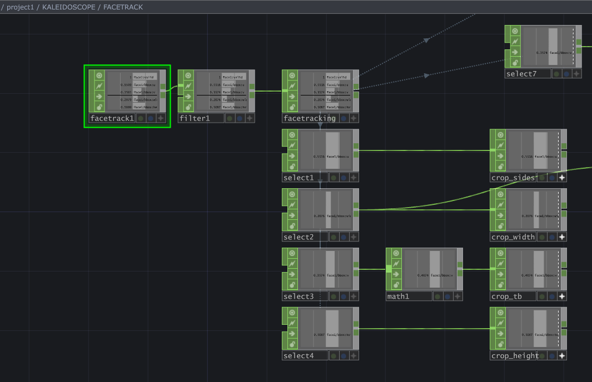
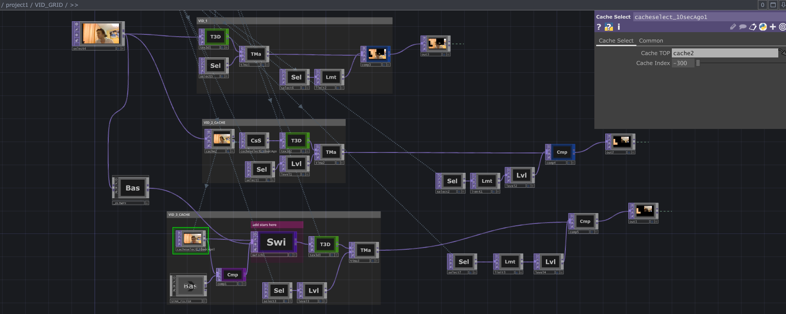

Real-time camera transformation & performative scenography
VJing became for me a space to experiment with scenographic potential in real time. Rather than projecting pre-rendered visuals, I work with the live presence of performers - capturing, fragmenting and re-structuring their image as they move. The stage turns into a responsive architecture where light, delay and symmetry amplify the performers’ energy instead of covering it.
A real-time face tracking system dynamically repositioned the centre of a kaleidoscopic transformation. The performer’s movement continuously redefined the symmetry axis, turning the body into a generative spatial structure.
The live camera feed was segmented into a grid structure combining multiple temporal layers. Three streams were composited:
This produced spatialised time displacement, where different sections of the performer existed in distinct temporal states simultaneously.
